Installing Electrum Server
Electrum Server (Electrs) enables you to connect Bitcoin wallets like Electrum and Sparrow directly to your own Bitcoin Core node. This provides privacy, speed, and complete control over your wallet infrastructure without relying on third-party servers.
In this guide, you will:
- Access the Start9 Marketplace
- Install Electrs service
- Configure Electrs to connect to Bitcoin Core
- Start Electrs and monitor indexing progress
- Connect your Bitcoin wallets to your Electrum server
Pre-requisites
Preparation
- Bitcoin Core installed and fully synchronized
- Start9 OS running and accessible via web interface
- Master password set during initial setup
- Additional 80-100GB storage for Electrum index
- 4-8 hours available for initial indexing
Hardware
- Start9 OS device (native or Proxmox VM)
- MacBook or desktop for access
- Sufficient disk space (~580GB total for Bitcoin + Electrs)
Software
- Web browser (Safari, Chrome, Firefox, etc.)
- Electrum or Sparrow wallet (for connecting after installation)
References
Step-by-Step Instructions
Step 1: Access Start9 Marketplace
Electrs is available in the Start9 Marketplace. To begin:
- Open your web browser
- Navigate to your Start9 web interface:
- Local access:
https://xxx-yyy.local(replace with your device name) - IP access:
https://192.168.1.101(use your Start9 IP address)
- Local access:
- Log in with your Start9 master password
🌐 Marketplace Help: If you don’t see Electrs, ensure you’re connected to the internet and refresh the marketplace.
Step 2: Install Electrs
- Click on Marketplace in the left sidebar
- Search for “Electrs” or “Electrum Server” in the search bar
- Locate Electrs in the results
- Click on Electrs to open the service details
- Review the service description and requirements
- Click Install button
- Wait for the download and installation to complete (~2-5 minutes)
Step 3: Configure Electrs
After installation completes:
- Go to Services in the sidebar
- Click on Electrs
- Click the Configure button (or Menu → Config) to configure the service:
- Log Filters:
info(default) - Recommended to keep at default for normal operation. Set todebugonly if troubleshooting indexing or connection issues. - Index Batch Size:
10(default) - Recommended to keep at default unless experiencing memory constraints. Increase if you have plenty of RAM available. - Index Lookup Limit: Leave blank or set to
200(recommended) - No default value. Setting a limit prevents large queries from consuming excessive resources; increase only if you have wallets with very large transaction histories (10,000+ transactions).
- Log Filters:
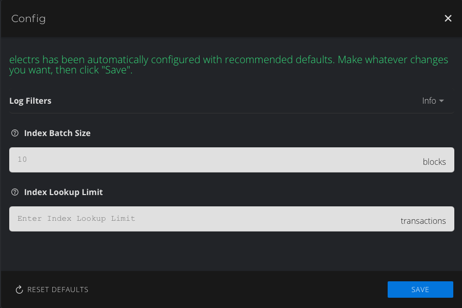
- Ensure your Bitcoin Core node is selected as the backend in the dependencies section
🔗 Backend Connection:
- Electrs requires a running Bitcoin Core node. If Bitcoin Core is not detected, make sure it is installed, fully synced, and running.
- If you have multiple Bitcoin nodes, select the correct one in the backend dropdown.
- Review the highlighted Bitcoin Core configuration requirements for Electrs:
- Pruning: Pruning must be fully disabled (not “Automatic”). Electrs requires access to the full blockchain to build its index.
- Transaction Index (txindex): Must be enabled (On) so Electrs can efficiently query transaction data.
- ZeroMQ: Should be enabled (On) for real-time block notifications.
🗄️ Pruning & Transaction Index:
- You cannot enable Transaction Index (txindex) unless pruning is fully disabled. If your Start9 interface only shows “Automatic” for pruning, you will not be able to use Electrs until you can set pruning to “Disabled” (no pruning).
- Start9 automatically checks whether you have enough storage for the full Bitcoin blockchain; if space is insufficient, the “Disabled” option will not appear. Free up space or add storage, then reopen the settings to see the disabled/no-pruning option.
- If you cannot disable pruning, Electrs will not function correctly.
- Click Save to apply the configuration
Step 4: Start Electrs and Monitor Indexing
- In the Services list, click Electrs
- If the service shows Stopped, click Start
- Electrs will begin building its index from the Bitcoin blockchain
⏱️ Indexing Time:
- Initial indexing typically takes 4-8 hours depending on your hardware (CPU, disk I/O).
- The service will show Starting or Syncing during this process.
- You can monitor progress in the service logs or status page.
- Do not interrupt the indexing process.
- Once indexing completes, the service status will change to Running
Step 5: Connect Your Bitcoin Wallets
After Electrs is running, you can connect Bitcoin wallets to your server:
Electrum Wallet
⚡ Electrum setup guide: See Installing Electrum Wallet section below for detailed installation steps.
- Open Electrum wallet on your computer
- Go to Tools → Network → Server
- From the server selection dropdown, choose Connect only to a single server (instead of the default “Auto-connect”)
- In Network → Server, set Server to the Quick Connect URL from Start9 (Electrs service → Menu → Properties → Quick Connect). This is a single URI that already combines host and port (no need to enter them separately). Onion format example:
<your-onion>.onion:50001:t(e.g.,abcdef.onion:50001:t). - (macOS Tor users) Start the Tor service on your Mac, then go to Proxy tab and set SOCKS5 to
127.0.0.1and Port9050to route Electrum over Tor
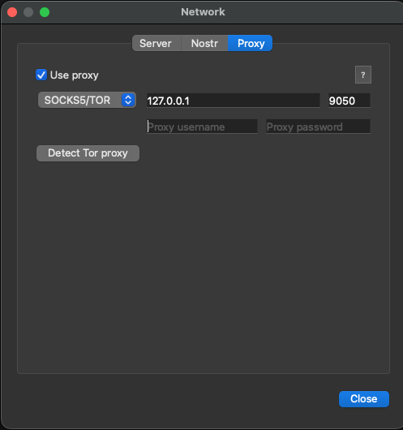
- Click Close to confirm
- Verify connection by the network icon in the bottom-right corner (blue = connected but still syncing or no history yet on a new wallet; green = fully connected and synchronized)
Sparrow Wallet
🐦 Sparrow setup guide: See Installing Sparrow Wallet section below for detailed installation steps.
- Open Sparrow wallet on your computer
- Go to Settings (macOS: Sparrow → Settings)
- Click on Server in the left sidebar
- Select Private Electrum from the Server Type dropdown
- In URL, enter the host and port separately: set Host to your onion address from Start9 (Electrs service → Menu → Properties → Hostname, e.g.,
abcdef.onion) and Port to the Electrs port from Start9 (Electrs service → Menu → Properties → Port, e.g.,50001). Leave Use SSL toggled off and Certificate blank. - Toggle Use Proxy on, then set Proxy URL to Host
127.0.0.1and Port9050.
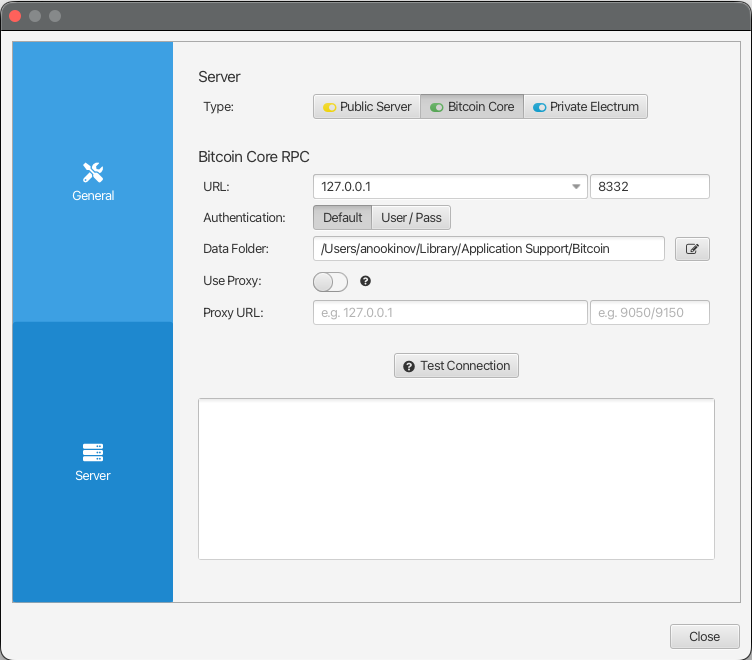
Step 6: Verify Wallet Connection
- In your wallet (Electrum or Sparrow), check the network status icon
- Verify the wallet is syncing from your own Electrs server
- Check transaction history loads correctly
- Send a test transaction to confirm full functionality
✅ Success Indicators:
- Wallet shows connected status (green icon = fully synced; blue icon = connected but still syncing)
- Transaction history appears quickly
- New transactions broadcast successfully
- No third-party servers in connection log
Installing Electrum Wallet
Electrum is a lightweight Bitcoin wallet that connects to your Electrs server for fast, private transaction management.
Electrum System Requirements
- macOS: 10.13 or later
- Windows: 7 or later
- Linux: Ubuntu 18.04 or later
- Storage: ~100 MB available disk space
Electrum Installation
Step 1: Download Electrum Wallet
- Open your web browser on your desktop/laptop computer
- Visit the official Electrum website
- Click on the Download button
- Select the appropriate version for your operating system:
- macOS: Download the
.dmgfile - Windows: Download the
.exeinstaller - Linux: Download the
.AppImageor use your package manager
- macOS: Download the
- Wait for the download to complete
Step 2: Verify the Electrum Download (Optional but Recommended)
🔒 Signature Verification:
- Signature verification is optional for most users but recommended for security-conscious Bitcoin holders
- If verification fails, delete the downloaded file and try again from the official website
Verifying the signature ensures the file hasn’t been tampered with:
-
On the Electrum website, locate the GPG Signatures section
-
Download the signature file (
.asc) corresponding to your version (e.g.,electrum-4.6.2.dmg.asc) -
You’ll need Thomas Voegtlin’s official signing key fingerprint to verify the download:
- Key fingerprint:
6694 D8DE 7BE8 EE56 31BE D950 2BD5 824B 7F94 70E6 - This is the official key published on the Electrum website and GitHub repository
- Verify it matches the published GitHub key:
curl -fsSL https://raw.githubusercontent.com/spesmilo/electrum/master/pubkeys/ThomasV.asc -o ThomasV.asc gpg --show-keys --fingerprint ThomasV.ascEnsure the fingerprint shown matches
6694 D8DE 7BE8 EE56 31BE D950 2BD5 824B 7F94 70E6. - Key fingerprint:
-
In your terminal, navigate to your Downloads folder:
cd ~/Downloads -
Import the Electrum signing key from a keyserver using the fingerprint:
gpg --keyserver keys.openpgp.org --recv-keys 6694D8DE7BE8EE5631BED9502BD5824B7F9470E6 gpg --import ThomasV.asc -
Verify the signature:
gpg --verify electrum-4.6.2.dmg.asc electrum-4.6.2.dmgReplace
4.6.2with your downloaded version number, or use wildcards:gpg --verify electrum-*.dmg.asc electrum-*.dmg -
Look for “Good signature from Thomas Voegtlin” in the output
ℹ️ About GPG Trust Warnings:
If you encounter
gpg: Can't check signature: No public keyfor an additional fingerprint (e.g.,AA0BC6824B397BBA99776E157ED8D82B37192688), import that specific key only if you can confirm it belongs to an official Electrum signer:gpg --keyserver keys.openpgp.org --recv-keys AA0BC6824B397BBA99776E157ED8D82B37192688Or use an alternative keyserver:
gpg --keyserver hkps://keyserver.ubuntu.com --recv-keys AA0BC6824B397BBA99776E157ED8D82B37192688It’s sufficient to have a valid signature from a known Electrum signer (Thomas Voegtlin, SomberNight/ghost43, or Emzy) for the macOS
.dmg. Unknown additional signatures can be ignored if at least one trusted signer validates the file.
Step 3: Install Electrum Wallet
macOS:
- Double-click the downloaded
.dmgfile - Drag the Electrum icon to the Applications folder
- Open Applications folder
- Double-click Electrum to launch
- Allow the app to run if prompted by security dialog
💻 Windows/Linux Install: For platform-specific installation steps, follow the official Electrum instructions for your OS. See the Electrum downloads page and your distribution’s package manager/docs for recommended methods.
Step 4: Initial Electrum Setup
When Electrum launches for the first time:
- Configure Network Connection - On the initial launch, Electrum will prompt you to configure network settings:
- Leave both checkboxes unchecked (default):
- Use proxy: Leave unchecked (unless you’re using Tor)
- Select electrum server: Leave unchecked for now
- Electrum will auto-connect to a public server initially
- You’ll configure your own Electrs server connection after wallet creation
- Leave both checkboxes unchecked (default):
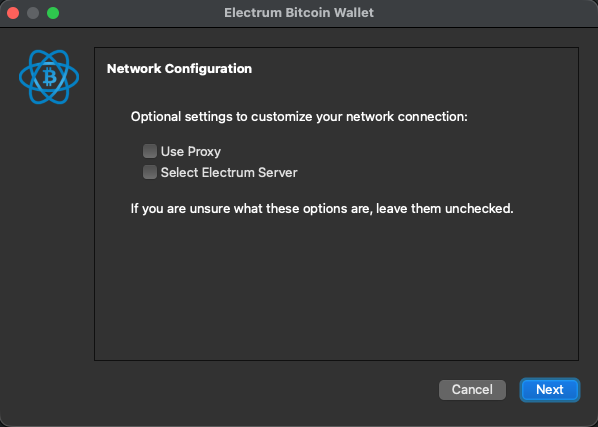
- Enter a Wallet Name (e.g., “My Bitcoin Wallet”)
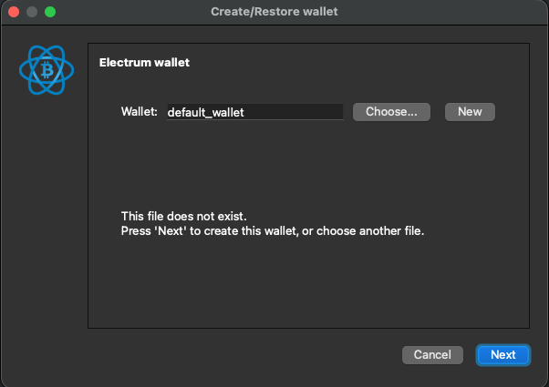
- Choose Standard Wallet for single-signature wallets
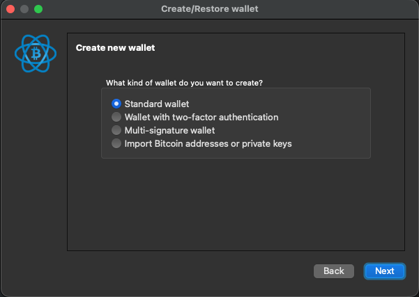
- Select Create a new seed to generate a new recovery seed
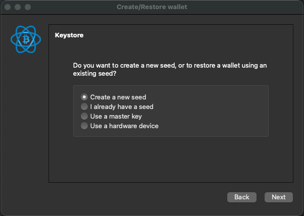
- Write down your 12-word seed phrase and store it securely offline
⚠️ Seed Phrase Security:
- Never share your seed phrase with anyone
- Store the written seed phrase in a secure location (safe, safe deposit box)
- Without the seed phrase, you cannot recover your wallet if your computer fails
- Electrum never asks for your seed phrase after initial setup
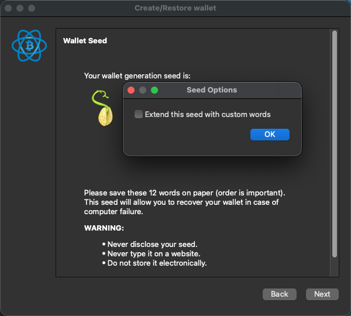
- Confirm your seed by entering the words in the correct order
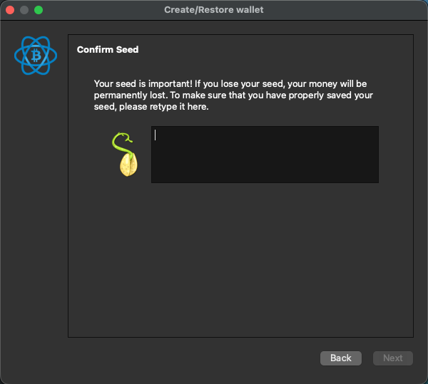
- Set a strong Password to encrypt your wallet file and click Finish
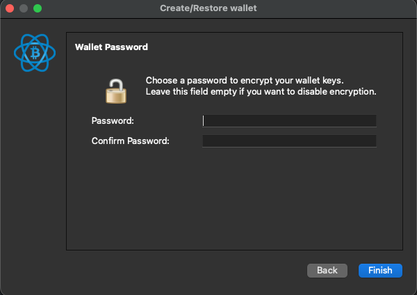
- On the version notification prompt, select Yes to receive version update notifications or No to skip
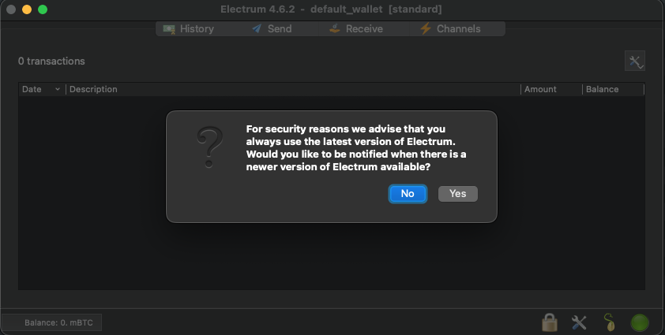
Step 5: Connect Electrum to Your Electrs Server
For detailed instructions on connecting Electrum to your Electrs server, refer to the Electrum Wallet section under Step 5: Connect Your Bitcoin Wallets above.
✅ Electrum is Ready:
- Your wallet is now connected to your own Electrs server
- You can receive Bitcoin addresses and send/receive transactions privately
- Your transaction data remains on your server; no third-party servers are involved
Installing Sparrow Wallet
Sparrow Wallet is a privacy-focused Bitcoin wallet with advanced features for managing multiple wallets and hardware devices. It connects to your Electrs server for full control.
Sparrow System Requirements
- macOS: 10.14 or later (Intel or Apple Silicon)
- Windows: 7 or later
- Linux: Ubuntu 18.04 or later
- Java: Java Runtime Environment (JRE) 11 or later (usually bundled)
- Storage: ~200 MB available disk space
Sparrow Installation
Step 1: Download Sparrow Wallet
- Open your web browser on your desktop/laptop computer
- Visit the official Sparrow Wallet website
- Click on Download or scroll to the Downloads section
- Select the appropriate version for your operating system:
- macOS: Download the
.dmgfile (choose Intel or Apple Silicon as appropriate) - Windows: Download the
.exeinstaller - Linux: Download the
.tar.gzfile or use your package manager
- macOS: Download the
- Wait for the download to complete (~100-150 MB)
Step 2: Verify the Sparrow Download (Optional but Recommended)
Verifying the signature ensures the file hasn’t been tampered with:
-
On the Sparrow website, locate the Checksum or PGP Signature section
-
Download the signature file (
.asc) and checksum file -
In your terminal, navigate to your Downloads folder:
cd ~/Downloads -
Verify the
.dmgchecksum against the manifest:shasum -a 256 -c sparrow-*.sha256If the download provides a manifest text file instead (for example,
sparrow-2.3.1-manifest.txt), use that filename:shasum -a 256 -c sparrow-*-manifest.txtor
shasum --check sparrow-*-manifest.txt --ignore-missingExpect to see an
OKline for your.dmgfile (for example,Sparrow-2.3.1-aarch64.dmg: OK). This confirms the.dmgfile’s integrity matches what’s in the manifest. -
Import Craig Raw’s signing key and verify the PGP signature of the manifest file:
To import directly from Craig Raw’s Keybase page (as linked on the Sparrow site):
curl https://keybase.io/craigraw/pgp_keys.asc | gpg --import gpg --fingerprint craigrawVerify the manifest signature (note: the
.ascsigns the manifest.txtfile, not the.dmgdirectly):gpg --verify sparrow-*-manifest.txt.asc sparrow-*-manifest.txtExample using the current files:
gpg --verify sparrow-2.3.1-manifest.txt.asc sparrow-2.3.1-manifest.txtLook for “Good signature from Craig Raw” in the output.
🚀 Alternate Sparrow in-app verification (Sparrow 1.8.3+):
If you have Sparrow 1.8.3 or later installed, you can verify directly in the app. Download these three files to the same folder (e.g.,
~/Downloads):
- Manifest Signature:
sparrow-2.3.1-manifest.txt.asc- Manifest:
sparrow-2.3.1-manifest.txt- Your install file from the list above (e.g.,
Sparrow-2.3.1-aarch64.dmg)Then drag and drop any of these files onto Sparrow to open the Verify Download dialog (or open it from Tools → Verify Download). Sparrow will verify the download for you.
- Verification complete: The checksum in step 4 verified your
.dmgfile integrity, and the GPG signature in step 5 confirmed the manifest is authentic. Together, these steps prove your Sparrow download is correct and untampered.
🔒 Signature Verification:
- Signature verification is optional for most users but recommended for security-conscious Bitcoin holders
- If verification fails, delete the downloaded file and try again from the official website
Step 3: Install Sparrow
macOS:
- Double-click the downloaded
.dmgfile - Drag the Sparrow icon to the Applications folder
- Open Applications folder
- Double-click Sparrow to launch (or right-click and select Open)
- Allow the app to run if prompted by security dialog
💻 Windows/Linux Install: If installation steps differ on your system, refer to the Sparrow downloads page and your OS/distribution documentation for the most up-to-date guidance.
Step 4: Initial Sparrow Setup
When Sparrow launches for the first time:
- Choose whether to configure a server now or select Later / Offline Mode. (You can safely pick later/offline and set your Electrs server after wallet creation.)
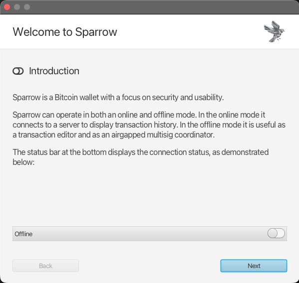
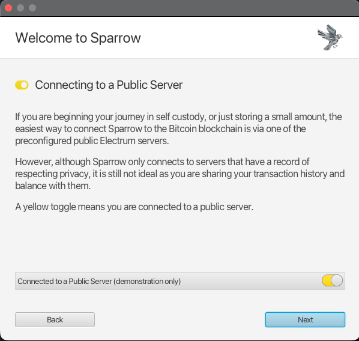
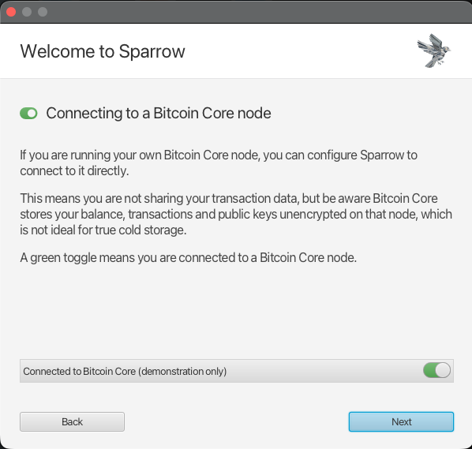
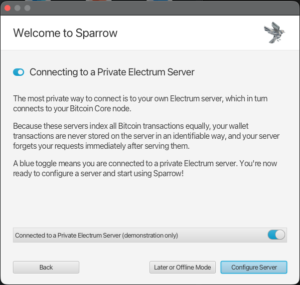
- Click New Wallet or File → New Wallet
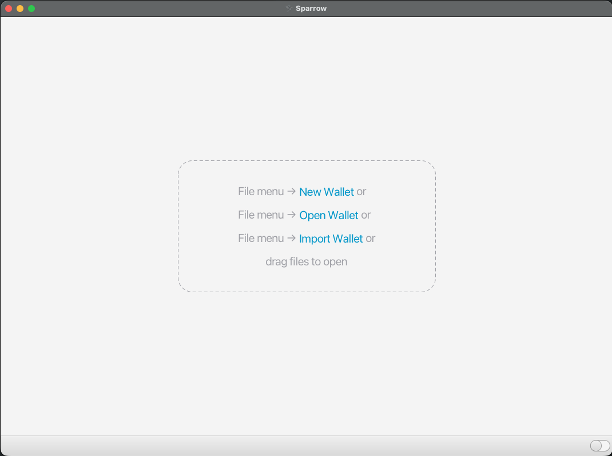
- Enter a wallet name (e.g., “My Bitcoin Wallet”) and click Create Wallet
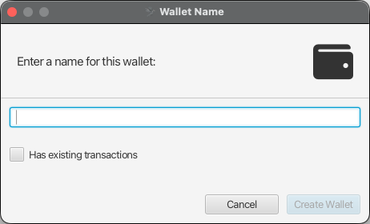
-
Choose Settings for your new wallet:
- Choose Policy Type: Single-Signature or Multi-Signature
- Choose Script Type: for single-sig, use Native Segwit (P2WPKH); for multi-sig, use Native Segwit (P2WSH) or your preferred type
- Review Script Policy (Descriptor): confirm it matches your selections (e.g.,
wpkh(Keystore1)) - Select Keystores: choose one option — connected hardware wallet, airgapped hardware wallet, new or imported software wallet, or xpub/watch-only wallet
- If using a software wallet, select New or Imported Seed
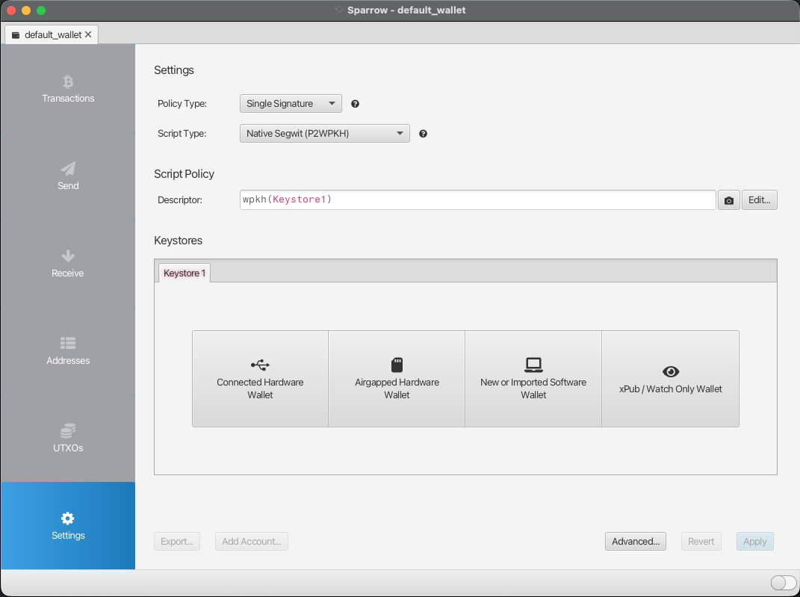
-
Choose the seed type:
- Mnemonic Words (BIP39): Industry standard method; recommended for most users
- Master Private Key (BIP32): Single master private key (advanced users)
- Mnemonic Shares (SLIP39): Shamir secret sharing for distributed backup (advanced)
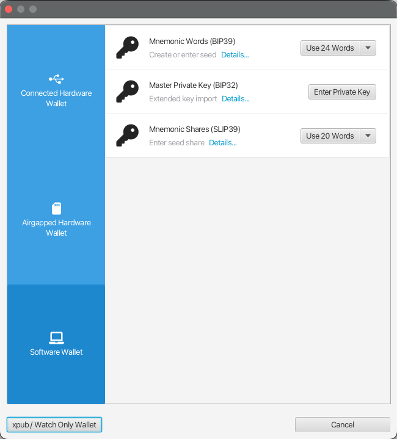
- If you selected Mnemonic Words (BIP39), choose word count (12 words recommended for standard security; 24 words for enhanced security)
- Click Generate New to create a new seed phrase
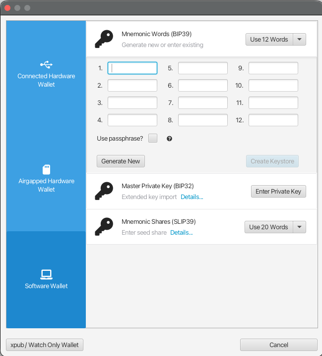
- Write down your seed phrase and store it securely offline
⚠️ Seed Phrase Security:
- Never share your seed phrase with anyone
- Store the written seed phrase in a secure location (safe, safe deposit box)
- Without the seed phrase, you cannot recover your wallet if your computer fails
- Sparrow never asks for your seed phrase after initial setup
- Consider using a hardware wallet (Ledger, Trezor) for large amounts
-
Confirm your seed by clicking Confirm Backup… and then Re-enter Words
-
Enter the words in the correct order and click Create Keystore
-
Review the Keystore Import dialog:
- Derivation Path (default):
m/84'/0'/0'(Native Segwit; this is the default Account 0 — standard for most wallets) - Accept the default path or modify if needed for specific use cases (e.g., different accounts)
- Click Import Keystore to complete
- Derivation Path (default):
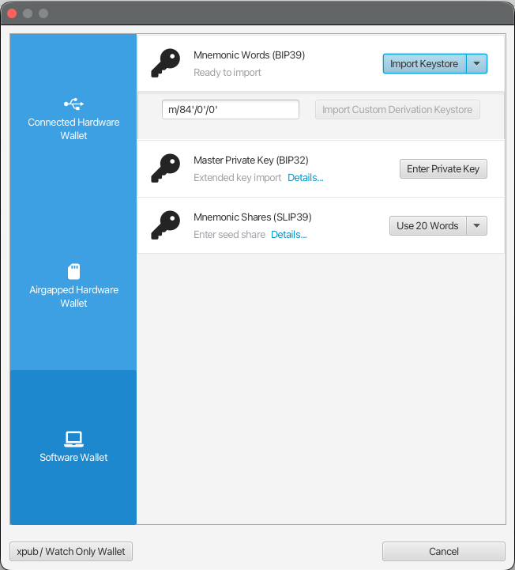
-
Review the Keystore Settings dialog that appears:
- Type: Software Wallet
- Label: BIP39 (or your custom label)
- Master Fingerprint: Unique identifier for your seed phrase
- Derivation:
m/84'/0'/0'(your chosen derivation path) - xpub / zpub: Extended public key for address generation (shown for reference)
- Click Apply to confirm and save keystore settings
-
Set a strong Password to encrypt your wallet file
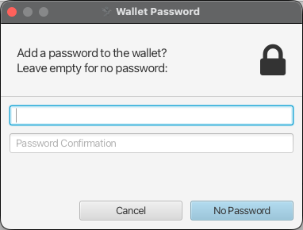
- Click Create Wallet
Step 5: Connect Sparrow to Your Electrs Server
For detailed instructions on connecting Sparrow to your Electrs server, refer to the Sparrow Wallet section under Step 5: Connect Your Bitcoin Wallets above.
✅ Sparrow is Ready:
- Your wallet is now connected to your own Electrs server
- You can receive Bitcoin addresses and send/receive transactions privately
- Your transaction data remains on your server; no third-party servers are involved
- Sparrow offers advanced features like multi-sig wallets and hardware wallet integration
👈 Prev: Installing Mempool Explorer
👉 Next: Installing Nostr Relay